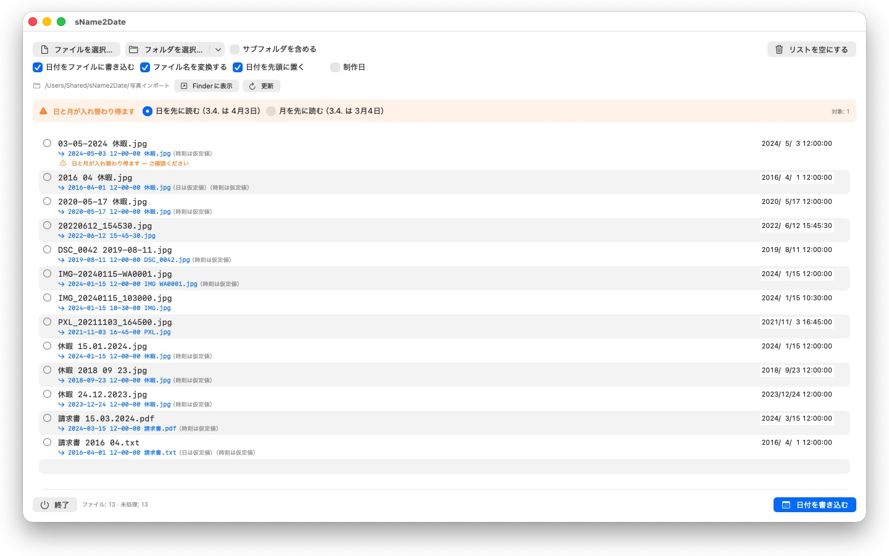
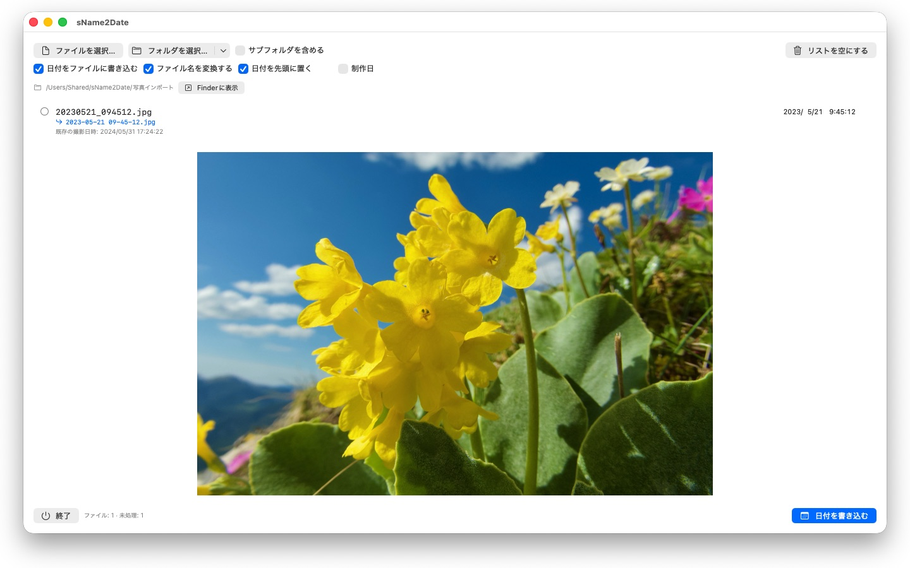

撮影日時のない写真は、どこにも並びません。sName2Date はファイル名から日付を取り出し、どの写真管理ソフトも探す場所に書き込みます。


多くの写真や動画は、日付をファイル名に持っています。ただし、プログラムが探す場所には入っていません。チャットやスキャナー、古い保存先から取り込んだ画像は IMG_20240115_103000.jpg や 休暇 15.01.2024.jpg のような名前になり、どの写真管理ソフトでも今日の日付で表示されます。
sName2Date はファイル名から日付を読み取り、撮影日時としてファイルに書き込みます。まだ撮影日時がない場合は、新しく作成します。
認識される表記
日付と時刻を、次のような一般的な形式で認識します。
- 2024-01-15 10-30-00
- IMG_20240115_103000
- IMG-20240115-WA0001
- 2024-01-15 · 2024 01 15 · 2024_01_15
- 15.01.2024 · 15-01-2024 · 15.01.24
- January 15 2024 — 文字で綴られた月名
- 2016 04 · 04-2016 — 年と月だけ
文字で綴られた月名は、システムの言語と英語で、長い形も省略形も読み取られます。日本語の月は「1月」のように数字で書き、文字の並びではないため、日本語の月名は対象になりません。日本語のファイル名では上の数字の表記が使われ、英語の月名はいつでも読み取られます。
名前に日付だけがあって時刻がないときは、時刻を補います。何時にするかは自分で決められます。日もないときはその月の1日とみなし、行にその旨が表示されます。名前に日付が複数あるときは、最初のものが選ばれます。日と月が入れ替え可能なときは設定に従いますが、該当するファイルには印が付き、黙って推測されることはありません。
名前にまったく日付がないときは、行の右側で自分で入力します。入力できる範囲は、現存する最古の写真が撮られた 1826 年までさかのぼります。19世紀の写真をスキャンしたものも、昨日撮った写真と同じように日付を付けられます。
変更されるもの
書き込まれるのは EXIF DateTimeOriginal と DateTimeDigitized、および TIFF DateTime、動画と音声ではコンテナ内の作成日時です。必要なら、ファイル自体の作成日と変更日も設定できます。
画像データはそのままです。JPEG が再圧縮されることも、動画が再エンコードされることもありません。動画と音声ではたいていコンテナ内の数バイトを書き換えるだけなので、大きな動画でも一瞬で終わります。
撮影日時を保持できるのは JPEG、PNG、TIFF、HEIC、GIF、動画形式の MP4、MOV、M4V、そして音声形式の M4A と M4B です。
撮影日時を保持できないファイルも扱えます
PDF やテキストファイル、表計算には撮影日時の欄そのものがありません — それでもリストには入ります。sName2Date はそこでファイル自体の作成日と変更日を設定します。日付が届きうる唯一の場所だからです。行には、緑ではなくオレンジのチェックでそれが示されます。ここでは拡張子は関係ありません。PDF、テキスト、表計算、アーカイブ、どれでも構いません。
ファイルにいっさい触れてほしくないときは、ウインドウ上部の「日付をファイルに書き込む」のチェックを外します。すると sName2Date は名前だけを ISO の表記にします。請求書 15.03.2024.pdf は 2024-03-15 12-00-00 請求書.pdf になります。Finder ではフォルダが日付順に並びます。必要なら、日付を先頭に移さず、名前の中にあった位置に残すこともできます。
すべて元に戻せます
一度の実行は Cmd+Z で完全に取り消せます。撮影日時も、ファイルのタイムスタンプも、変更したファイル名もです。Cmd+Shift+Z でやり直せます。
フォルダ全体
sName2Date はフォルダを丸ごと、下位のフォルダも含めて一度に扱い、すでに撮影日時のあるファイルを飛ばすこともできます。一度許可したフォルダは記憶され、二度と尋ねられません。
sName2Date Lite · 無料 — 一度に 1 つのファイルを扱う版。ファイル名の日付を撮影日時として写真、動画、録音に書き込み、手動で設定し、名前をISO形式にそろえ、すべてを ⌘Z で取り消せます — sName2Date と同じ機能を備えていますが、フォルダ単位の処理はできません。
- macOS 12 以降が必要
- 24 言語に対応
- サポート： SwiftAppsBavaria@gmx.net
その他のApp
sCollectPlay
メディアライブラリのためのプレーヤー。単にフォルダ、iTunes XML、またはsCollectライブラリから、音楽、映画、オーディオブック、ポッドキャストを再生 — ファイルのタグは一切変更されません。プレイリスト、音声トラック、字幕トラックに対応し、映画ではスローモーションとコマ送りも可能。MKV、AVI、DSDなど、macOSが自身で再生できないものは外部プレーヤーに渡します。
sCollectPlay Lite
sCollectPlayの軽量版。フォルダ、iTunes XML、またはsCollectライブラリを開くだけで、音楽、映画、オーディオブック、ポッドキャストを再生 — プレイリスト、音声トラック、字幕トラック、スローモーション、コマ送りに対応。1セッションにつきソースは1つ。カラムブラウザ、自分で作成するプレイリスト、最近使ったソースはフル版専用です。
sBikeBridge
ポータルにアップロードせずにライドを分析。FIT形式で記録するあらゆるサイクルコンピュータのFITファイルに加え、GPXとTCXも読み込めます。ライドはMac上の専用ライブラリに保存 — 地図、パワー、心拍数、写真、メモ付きで、重複はインポート時に検出されます。年別・月別の指標と、距離、獲得標高、所要時間によるフィルタでライドを比較できます。地図は必要に応じてオフラインでも利用できます。